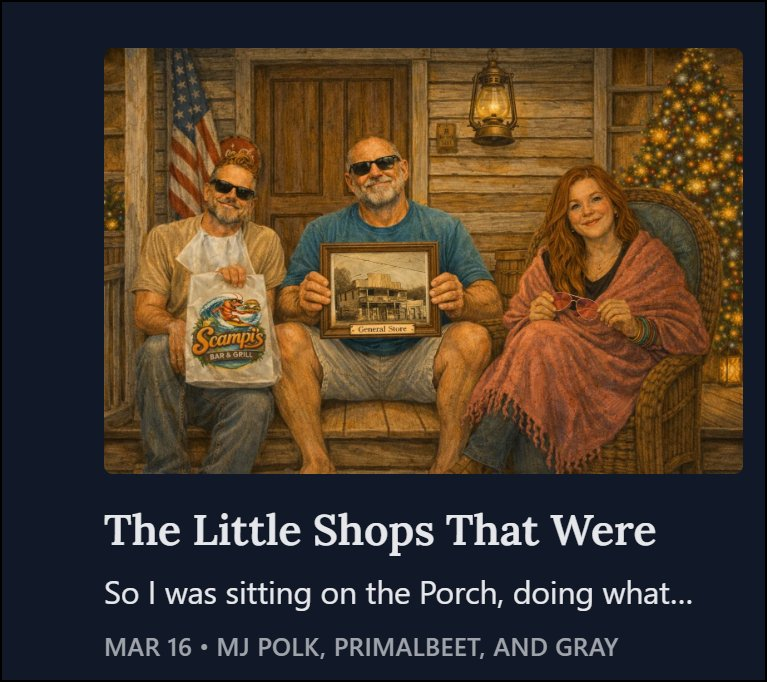

Stubborn scribes who stake
our claim on this tangled South.
A writer cannot not write. An obstinate soul wrestling the chaos of the world into art.

A writer cannot not write. An obstinate soul wrestling the chaos of the world into art.
 Beau + Gray · Apr 27
Beau + Gray · Apr 27
The Trio goes to FloydFest. Jean-Paul emits observational signal.

All three · Mar 16Gators in a Cape Coral convenience store. Bootleggers behind the Quality Inn.
 All three · Mar 9
All three · Mar 9
Airlie Gardens, Wilmington. A flower show. A peacock. Zero surprises.
No noise. No schedule. Just the work, straight to you.
 MJ Polk
Hank Cotton
MJ Polk
Hank Cotton
300,000 miles OTR, twenty-five years in sales, and a moral realism built from the road, the ditch, and the mountain.
 Rick West
Beau Pritchett IV
Rick West
Beau Pritchett IV
Atmospheric psychological fiction, a strong sense of place, and the particular weight of what's been left unsaid.
 Gray
Grace Lynn
Gray
Grace Lynn
Lyrical confessional precision — Southern goth with softer edges, and stories that are sometimes fiction but always true.
A deep dive into Play All Night — and into the South that shaped the band, and the band that shaped the South.
Read the interview →"I emit low-level observational signal. The humans continue regardless." — Jean-Paul
Who is Jean-Paul?You've spent some time here. You know what this is. If it's yours, come in.
Join the Guild →